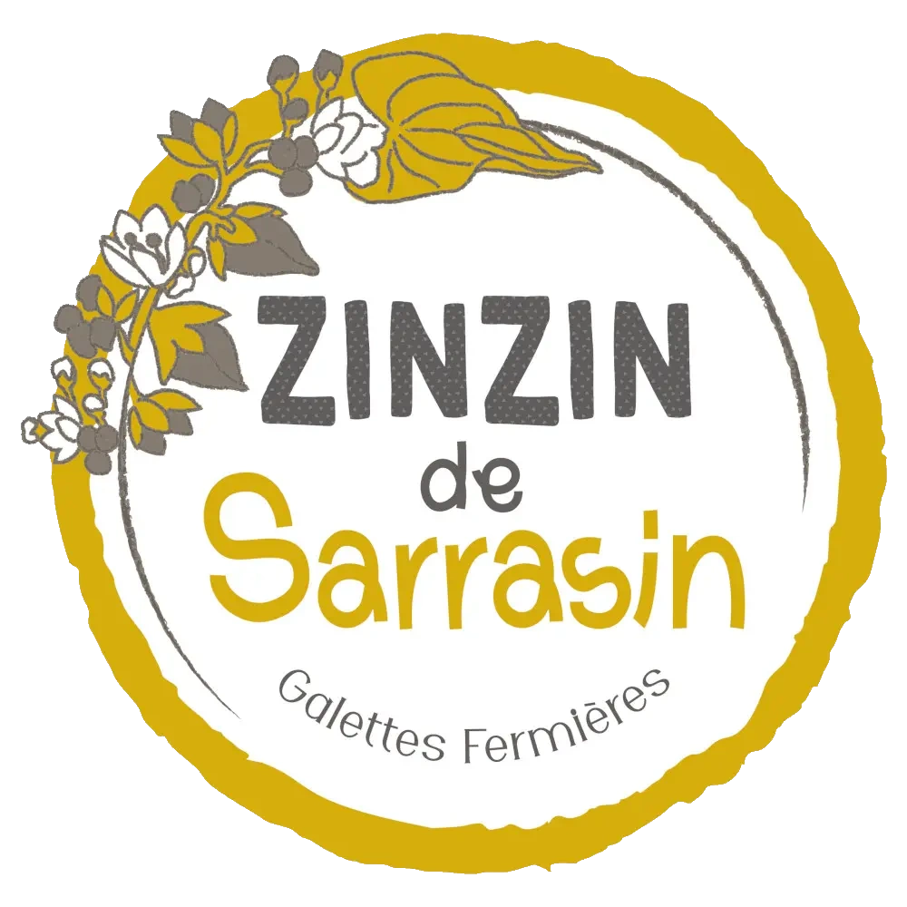

<div class="first section" fxLayout="column" fxLayoutAlign="center none">
  <div #first fxLayout="row" fxLayoutAlign="center none">
    
  </div>
  <button class="down-button" color="primary" mat-mini-fab (click)="scrollTo(second, 'center')" aria-label="next-page">
    <mat-icon>arrow_downward</mat-icon>
  </button>
</div>
<div class="parallax" id="champ"></div>
<div #second class="section" fxLayout="column" fxLayoutAlign="center stretch">
  <button class="up-button" color="primary" mat-mini-fab (click)="scrollTo(first, 'end')" aria-label="previous-page">
    <mat-icon>arrow_upward</mat-icon>
  </button>
  <h1>Nos galettes sont fabriquees a partir du sarrasin que nous cultivons</h1>
  <button class="down-button" color="primary" mat-mini-fab (click)="scrollTo(third, 'end')" aria-label="next-page">
    <mat-icon>arrow_downward</mat-icon>
  </button>
</div>
<div class="parallax" id="fleur"></div>
<div #third class="last section" fxLayout="column" fxLayoutAlign="center stretch">
  <button class="up-button" color="primary" mat-mini-fab (click)="scrollTo(second, 'center')"
          aria-label="previous-page">
    <mat-icon>arrow_upward</mat-icon>
  </button>
  <h1>N’hesitez pas a nous contacter pour toute demande de production particuliere</h1>
</div>
